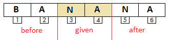

Stringovi¶

U ovoj lekciji ćemo pokazati kako se varijable tipa niza mogu koristiti za rješavanje različitih vrsta zadataka. Također ćemo naučiti kako Scratch pamti stringove i blok funkcije koje se koriste za stringove.
String predstavlja niz znakova koji se tretiraju kao jedinstveni podaci. Stringovi imaju veliku primjenu u programiranju. Možemo stvoriti programe koji kombiniraju, uspoređuju, sortiraju, šifriraju i na drugi način obrađuju tekst. Treba imati na umu da se brojevi mogu tretirati i kao nizovi, ali u ovom slučaju ne radimo sa vrijednostima koje oni predstavljaju, nego znakovima - ciframa od kojih se sastoje.
Operacije nad stringovima
Kako bismo bolje razumjeli operacije nad stringovima, uz svaku ćemo navesti rezultat koji vraća ako se koristi nad stringovima s1=BANANA i s2=ANA.
U programskim jezicima se često koriste sljedeće operacije nad stringovima:
- određivanje dužine stringa
dužina s1→ 6
- uredba stringova
određivanje što je prije u abecednom rasporedu
s1<s2 ?→ falsenije točno “BANANA” abecedno iza “ANA”
- povezivanje stringova
poveži s1 i s2→BАNАNААNА,
- izdavanje znaka koji se nalazi na zadanoj poziciji
slovo 3 od s1→ N,
- sadrži?
provjera ako string s1 sadrži string s2
s2 u s1 ?→ truetočno jer se “ANA” sadrži u “BANANA”,
- pozicija
utvrđivanje prve pozicije u stringu na kojoj se nalazi drugi string pos
pos(s1,s2):
pozicija s2 u s1→ 2,
- kopiranje
pravljenje novog stringa koji se formira od zadanog broja znakova d počevši od zadane pozicije p u polaznom stringu
copy(s,p,d):
kopiraj iz s1 znakova 4 počevši od 3→ NАNА,
- brisanje
izmjena stringa s1 brisanjem, počevši od pozicije p, zadanog broja znakova d iz polaznog stringa
delete(s1,p,d):
obriši iz s1, počevši od pozicije 2, 2 znaka→ BАNА,
- umetanje
izmjena stringa s1 umetanjem stringa s2 u string s1 počevši od zadane pozicije p
insert(s1,s2,p):
umetni s2 u s1 počevši od 3→ BААNАNАNА.
Posljednje četiri operacije nisu izgrađene na Scratchu, ali na primjeru “String Operations” pokazat ćemo kako ih sami možemo provesti.
 Prouči slijedeće projekte¶
Prouči slijedeće projekte¶
Primjer 1 - Project “Parrot”¶
Glavni lik ovog projekta je papagaj. Prvo pita korisnika njegovo ime i čeka dok korisnik ne upiše njegovo ime i pritisne tipku Enter ili klikne kvačicu u desnom kutu okvira za odgovore. Potom pozdravlja korisnika po imenu i govori mu što je prvo slovo njegova imena i koliko slova ima ime. Razgovor između lika i korisnika prikazan je na sljedećoj slici.

Za stvaranje ovog projekta koristili smo se operacijama za izvlačenje prvog slova iz imena i određivanje koliko slova ima imena.
Nakon izvršenja naredbe  , Scratch pamti nz znakova koje je korisnik unio u protor koji se zove
, Scratch pamti nz znakova koje je korisnik unio u protor koji se zove  .
.
Sljedeća slika pokazuje kako se odgovor pamti i pomoću kojih operacija izvlači podatke koje lik komunicira kao izlaz s naredbom say.

Treća operacija koja je upotrebljena za formiranje izlazne poruke je  .
.
Skripta projekta Parrot prikazana je na slijedećoj lsici.
Slijedi projekt u kojem se pokazuje kako se korištenjem string operacija mogu izdvajati brojevi.
Primjer 2 - Project “Exchange Digits”¶
Scenarij projekta
Glavni dio ovog projekta su skripte koje zamjenjuju jednolične znamenke i stotine u prirodnom troznamenkastom broju x koji se unosi s unosa.
Lik Voditelj traži od korisnika da upiše troznamenkasti broj. Unosi se troznamenkasti broj. Ako ne, zahtjev za unos ponavlja se sve dok se ne unese troznamenkasti broj. Tada se odvajaju prva i treća znamenka, pa se
stvarni broj preokreće sa zamijenjenim znamenkama jedinica i stotinama .
Na kraju, voditelj izgovara izvorni broj i broj sa zamijenjenim znamenkama jedinica i stotina.
Skripta projekta prikazana je na sljedećoj slici.

U sljedećem projektu provjerava se riječ palindrom. Palindrom je riječ ili fraza koja glasi slijeva udesno ili desno lijevo. Na primjer, riječ “potop” je palindrom. Broj koji je palindrom slično je definiran. Na primjer, broj 12321 je palindrom.
Primjer 3 - Projekt “Palindrome”¶
Lik Voditelj traži od korisnika da unese riječ. Varijabla d dobija dužinu riječi kao vrijednost. Usporede se prvo i posljednje slovo riječi, drugo i posljednje, ali ne najmanje bitno do sredine riječi. Varijabla i, čija je početna vrijednost 0 i povećava se za 1 unutar ciklusa, omogućuje ove usporedbe sljedećom provjerom.

Varijabla p označava broj provjera. Ako jedna od provjera pokaže da odgovarajuća slova nisu ista, riječ nije palindrom i to se registrira dodjeljivanjem 0 varijabli pal (koja je u početku postavljena na 1). Nakon provjere svih parova slova, ispisuje se poruka ako je riječ palindrom (pal = 1 je, inače nije).
Skripta projekta Palindrome prikazana je na sljedećoj slici.

Primjer 4 – Projekt “String Operations”¶
Ovaj projekt traži od korisnika da odabere jednu od operacija: kopiranje ili brisanje. Ovisno o onome što je tražio, potreban je unos, pa je ispisan rezultat operacije. Operacija se određuje klikom na odgovarajući gumb koji zatim deklarira operaciju. Kad primi poruku o odabranoj operaciji, skripta je izvršava. U projektu su uključena dva lika: gumb Kopiraj za brisanje i gumb Izbriši za brisanje. Skripta koja realizira brisanje je nešto jednostavnija. Novi niz s2 formira se na temelju unesenih vrijednosti za broj likova i pozicije iz koje su uzeti. U početku je prazno, a formira se dodavanjem jednog lika istodobno iz danog dijela početnog niza.
Skripte povezane s dobivanjem poruke Kopiranje prikazane su na sljedećoj slici. Unos podataka i stvaranje izlaznih poruka odvojeni su u zasebne postupke. Ovi se postupci mogu koristiti i kada se traži Delete.

Skripta za brisanje čini suprotno - formira novi niz od dijelova ispred i iza istaknutih znakova. Ponovo počinje iz praznog niza. Prvo im se daju znakovi s dijela ispred, a zatim slijede znakovi s dijela iza.
 Odgovori na slijedeća pitanja¶
Odgovori na slijedeća pitanja¶
Pitanje 1¶
- da
- Točno.
- ne
Q-77: Može li string sadržati znakove aritmetičkih operacija?
Pitanje 2¶
- L
- Ovo je pismo 1.
- Е
- Točno.
- N
- Ovo je pismo 3.
- А
- Ovo je pismo 4.
Q-78: Što će biti rezultat operacije slovo 2 od LENA?

{kind=link}
{kind=link}
Pitanje 4¶
- L
- To bi se postiglo s operativnim pismom od.
- LENA
- 4
- Točno.
- Dužina LENA
- To bi se postiglo spajanjem ove dvije riječi.
Q-80: Što će biti rezultat operacije dužina LENA?
Pitanje 5¶
- BАNА
- BАNАNА
- Točno.
- NАBАNА
- NАNАBА
Q-81: Što će biti rezultat operacije poveži BA i NANA
Pitanje 6¶

-
Q-82: Upari naredbe s vrijednostima koje će vratiti.
Pokušaj ponovo
- A
- A
- B
- ništa ne vraća
- C
- 1
- D
- 7
 Pokušaj!¶
Pokušaj!¶
Vježba 1¶
Create a program, which will form a number from the same digits as in the natural number n, but arranged it the reverse order.
Vježba 2¶
Write a program that determines the sum of the digits and the number of digits for the natural number n (1<= n <1000). For example:
n =12 the sum of the digits 3, and the number of digits is 2;
n =102 the sum of the digits 3, and the number of digits is 3.
Vježba 3¶
Napiši program koji u listu upisuje sve troznamenkaste Armstrongove brojeve. Broj je Armstrongov ako je jednak zbroju kubova svojih brojeva.
 Što smo naučili¶
Što smo naučili¶
U ovoj lekciji upoznajemo se sa nizom vrsta podataka i najčešćim operacijama koje se izvode na podacima ove vrste. Kroz primjere projekata pokazali smo kako se varijable tipa niza mogu koristiti za rješavanje različitih vrsta zadataka i kako se koriste nizove operacija ugrađene u Scratch.
Primjeri projekta: 10Studio
Novi pojmovi: string, palindrom.
Nove naredbe:  -
-  , ,
, ,  .
.
 Napravi neke od slijedećih projekata¶
Napravi neke od slijedećih projekata¶
Projekt 1 - “Šifriranje”¶
Sastavite projekt koji šifrira ili dešifrira uneseni tekst na sljedeći način.
Na “izvornom” popisu se nalazi 26 slova abecede zaredom. Popis kodova pohranjuje svih 26 slova redoslijedom različitim od onog na izvornom popisu. Da bi bilo teže razbiti kod, na jedno listi treba biti samoglasnik, i na drugoj listi samoglasnik. Korisnik unosi tekst koji bi projekt trebao šifrirati ili dešifrirati, ovisno o tome je li korisnik kliknuo gumb “šifriraj” ili “dešifriraj”.
Na primjer, ako lista „original“ i „kod“ imaju sljedeći sadržaj u nizu:
A |
B |
C |
D |
E |
F |
G |
H |
I |
J |
K |
L |
M |
N |
O |
P |
Q |
R |
S |
T |
U |
V |
W |
X |
Y |
Z |
V |
U |
B |
G |
D |
Q |
X |
Y |
Z |
E |
Ј |
K |
L |
O |
М |
N |
А |
W |
P |
R |
S |
Т |
F |
H |
C |
I |
a korisnik unese tekst maske, program ga treba šifrirati u LVBJV.
Međutim, ako bi ulazni kod maske trebao biti dešifriran, program bi ga trebao pretvoriti u OQYLQ.
Projekt 2 – “Naopako”¶
Napravite projekt koji od korisnika traži da upiše koliko riječi želi transformirati (n), a zatim učita ime n puta u ponavljajući ciklus, upiše ga u listu “imena” i pretvori ga u niz koji se dobije kad ime čita se s desna na lijevo i piše ga naopako.
Na primjer, ako je korisnik upisao n = 3, a zatim upisao imena: LENA, MARIO, KATARINA; popis naopako treba sadržavati: ANEL, OIRAM i ANIRATAK.
Projekt 3 – “Brojevi”¶
Napravite projekt koji navodi sve troznamenkaste brojeve koji imaju svojstvo dijeljenja s brojem dobivenim izbacivanjem srednje znamenke.